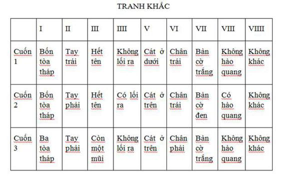
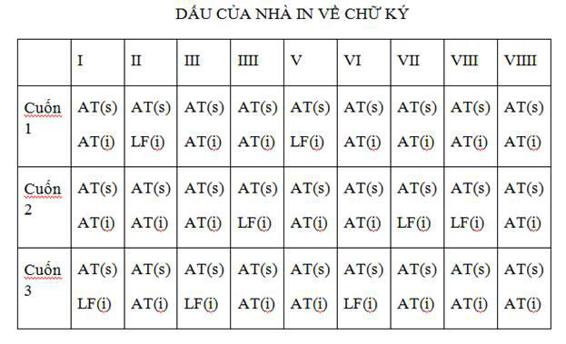
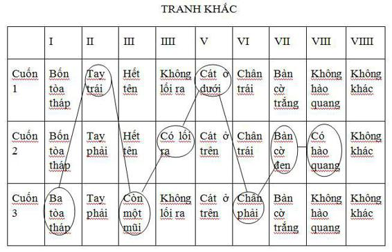
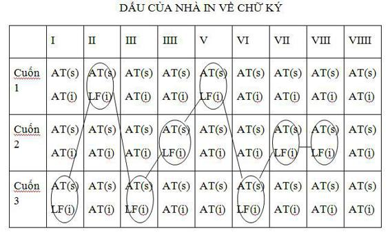

Bí ẩn này được xem như không có lời giải vì chính những lý do khiến người ta cho rằng nó có lời giải.
E.A. POE, VỤ GIẾT NGƯỜI Ở PHỐ NHÀ XÁC.
“Quy luật thật đơn giản,” Frieda Ungern nói, “ghép những chữ viết tắt đồng dạng với những chứ viết tắt dùng trong bản thảo tiếng Latinh cổ. Đây có thể là vì phần lớn tác phẩm được Aristide Torchia lấy nguyên xi từng chữ một từ một bản thảo khác, có thể là từ cuốn sách truyền kỳ Delomelanicon. Ở tranh khắc đầu tiên, ý nghĩa khá rõ ràng với bất kỳ người nào chỉ cần hơi quen thuộc với thứ ngôn ngữ bí truyền: NEM. PERV.T QUI N.N LEG. CERT.RIT rõ ràng là NEMO PERVENIT QUI NON LEGITIME CERTAVERIT.”
“Chỉ kẻ nào chiến đấu đúng luật mới chiến thắng.”
Họ đã uống với nhau tới cốc cà phê thứ ba, và, ít nhất là về hình thức, rõ ràng Corso đã được chấp nhận. Gã thấy bà ta gật đầu hài lòng.
“Rất tốt. Ông có thể giải nghĩa bất kỳ phần nào trong bức tranh này không?”
“Không,” Corso nói dối thản nhiên. Gã vừa nhận ra rằng trong cuốn sách của bà Nam tước có ba chứ không phải bốn ngọn tháp trong thành có tường bao mà kỵ sĩ đang phi tới. “Ngoại trừ cử chỉ của nhân vật chính ra, xem ra có vẻ rất hùng hồn.”
“Thì đúng thế: ông ta quay về phía bất kỳ ai đi theo, một ngón tay đặt lên môi, yêu cầu yên lặng… Đó là tacere – sự yên lặng của nhà hiền triết bí ẩn. Ở hậu điện, những bức tường của tòa thành vây quanh những ngọn tháp, tức là điều bí ẩn. Hãy để ý tới cánh cửa đóng. Lẽ ra nó phải mở mới đúng.”
Căng thẳng và lo lắng, Corso lật thêm mấy tờ cho đến khi thấy bức minh họa thứ hai, vị ẩn sĩ đứng trước một cánh cửa khác, cầm cái chìa khóa bằng tay phải. Câu chú giải là CLAUS. PAT.T.
“CLAUSAE PATENT,” bà Nam tước giải thích. “Họ mở cái bị đóng. Những cánh cửa đóng… Ẩn sĩ đại biểu cho tri thức, sự nghiên cứu, sự thông thái. Và nhìn đây, bên này cũng có con chó đen mà theo truyền thuyết thường đi theo Agrippa. Một con cẩu trung thành. Từ Plutarch tới Bram Stoker[1] và Dracula của ông ta, cả Faust của Goethe nữa, chó đen là con vật mà quỷ thường chọn làm hóa thân cho mình nhất. Còn cái đèn lồng thuộc về nhà triết học Diogenes, người rất xem thường quyền lực của thế giới trần tục. Tất cả những điều ông ta đòi hỏi ở Alexander hùng mạnh là nhà vua đứng che khuất ánh sáng mặt trời khỏi ông, nhà vua hãy dịch sang một bên vì nhà vua đang đứng trước mặt trời, đứng trước ánh sáng.”
“Còn chữ cái Teth[2] này?”
“Tôi không rõ.” Bà gõ nhẹ lên bức tranh minh họa. “Vị ẩn sĩ trong bộ bài ta rô, rất giống vị này, đôi khi có con rắn đi kèm, nếu không phải rắn thì cây gậy tượng trưng cho rắn. Trong triết học thần bí, rắn và rồng là những thần chú bảo hộ lãnh địa, khu vườn và bộ lông cừu kỳ diệu, chúng luôn luôn mở mắt kể cả khi ngủ. Chúng là Gương soi của Nghệ thuật.”
“Ars diavoli,” Corso buột miệng nói, và bà Nam tước gật đầu, mỉm cười bí ẩn. Nhưng gã biết, từ Fulcanelli và những văn bản cổ, rằng cụm từ “Gương soi của Nghệ thuật” có xuất xứ không phải từ ngành ma quỷ học mà từ ngành giả kim học. Gã tự hỏi không biết có bao nhiêu ngón bịp ẩn dưới cái vỏ ngoài thông thái của bà Nam tước. Gã ngầm thở dài. Gã cảm thấy mình như một người đi tìm vàng dìm nửa người dưới sông, tay cầm cái sàng. Nói cho cùng, gã nghĩ, bà ta cần tìm cái gì đấy để lấp đầy mấy cuốn bestseller năm trăm trang của bà ta chứ.
Nhưng Frieda Ungern đã lật sang bức tranh thứ ba.
“Lời đề từ là VERB. D.SUM C.S.T. ARCAN. Câu này tương ứng với VERBUM DIMISSUM CUSTODIAT ARCANUM. Có thể dịch là ‘Chìa khóa nằm trong từ bị mất’. Và bức tranh có nghĩa: một cây cầu, mối liên kết hợp giữa hai bờ sáng tối. Từ thần thoại cổ điển về Con rắn và những Bậc thang, ý nghĩa của nó rất rõ. Giống như cầu vồng, nó nối liền trái đất với thiên đường hay địa ngục… Để qua được nó, tất nhiên phải mở được cánh cổng kiên cố.”
“Còn về người cầm cung nấp trong đám mây?”
Khi hỏi câu này giọng gã run lên. Trong cuốn số một và số hai, ống tên trên vai cung thủ trống không. Trong cuốn thứ ba, trong ống có một mũi tên. Frieda Ungern để nguyên ngón tay trên đó.
“Cung tên là vũ khí của Apollo và Diana, là ánh sáng của quyền năng tối cao. Cơn phẫn nộ của Thượng đế, hay của Chúa. Đó là kẻ thù chờ phục kích người qua cầu.” Bà vươn mình về phía trước, giọng tự tin và bình thản, “Ở đây có một lời cảnh báo khủng khiếp. Đây không phải trò đùa.”
Corso gật đầu và chuyển sang bức tranh thứ tư. Gã cảm thấy sương mù dần choán ngập đầu óc. Những cánh cửa mở ra kèm theo tiếng kẽo kẹt đầy tử khí. Lúc này gã nhìn tên hề và tòa mê cung bằng đá với lời đề: FOR. N.N OMN. A.QUE. Frieda Ungern dịch là FORTUNA NON OMNIBUS AEQUE: Số mệnh của mỗi người không giống nhau.
“Nhân vật này giống như tên ngốc trong bài ta rô,” bà ta giải thích. “Gã khùng của Thượng đế trong Hồi giáo. Và tất nhiên, gã cũng cầm một cái gậy hay con rắn tượng trưng… Gã là tên ngốc kiểu Trung cổ, gã giô kề trong một cỗ bài, một tên hề. Gã tượng trưng cho định mệnh, cơ may, sự kết thúc của mọi thứ, kết quả dự kiến được hay không được. Hãy nhìn con xúc xắc này. Thời Trung cổ, lũ hề rất được ưu tiên. Họ được phép làm những chuyện bị cấm. Mục đích là để nhắc nhở chủ nhân rằng họ cũng sẽ chết, rằng kết cuộc của họ cũng không tránh khỏi như những người khác.”
“Ở đây gã tuyên bố điều ngược lại,” Corso phản đối. “Số mệnh của mỗi người không giống nhau.”
“Đương nhiên. Kẻ nào nổi loạn, thực thi tự do của mình và dám chịu rủi ro thì có thể giành lấy một phần số khác. Đó là điều cuốn sách này muốn nói thông qua tên hề, hình mẫu của tự do. Người thực sự tự do duy nhất, và cũng là người thông thái nhất. Trong triết học huyền bí, tên hề được đồng nhất với thủy ngân của nhà giả kim. Là sứ giả của Thượng đế, gã dẫn dắt các linh hồn đi qua vương quốc bóng tối…”
“Mê cung.”
“Đúng. Nó đây.” Bà trỏ bức tranh. “Và như ông thấy, cửa vào đóng.”
Lối ra cũng thế, Corso bất giác nhún vai tự nhủ. Gã chuyển sang bức minh họa tiếp theo.
“Câu chú giải này đơn giản hơn,” gã nói. “FR.ST. A. Đây là bức duy nhất tôi dám đoán. Tôi cho rằng thiếu một chứ u và một chữ r. FRUSTRA. Nghĩa là ‘vô ích.’”
“Giỏi lắm. Chính xác là như vậy, và bức tranh hợp với lời chú giải. Lão già bủn xỉn đếm tiền vàng, không nhận ra sự có mặt của Thần Chết tay cầm hai biểu tượng rõ ràng: chiếc đồng hồ cát và cây chĩa ba.”
“Tại sao là chĩa ba mà không phải lưỡi hái?”
“Vì Thần Chết là người gặt hái, nhưng quỷ mới là người thu hoạch.”
Họ dừng ở bức minh họa thứ sáu với người đàn ông bị treo ngược lên tường thành. Frieda Ungern vờ ngáp ra chiều chán ngán, như thể sự thể đã quá rõ ràng.
“DIT.SCO M.R nghĩa là DITESCO MORI, Ta giàu lên nhờ cái chết, câu nói mà con quỷ hãnh diện phát biểu. Ông có nghĩ vậy không?”
“Tôi cho là vậy. Nói cho cùng thì đó là chuyện làm ăn của hắn.” Corso đưa ngón tay lướt trên bức tranh khắc. “Người đàn ông bị treo ngược tượng trưng cho cái gì?”
“Đầu tiên là bí quyết thứ mười hai trong bài ta rô. Nhưng cũng có thể lý giải theo nhiều cách khác. Tôi nghĩ nó tượng trưng cho sự thay đổi thông qua sự hy sinh… Ông có biết trường ca về Odin[3] không?
Đằng đẵng chín đêm dài
Ta khắp mình thương tích
Treo trên đoạn đầu đài
Mặc gió trời vùi dập
Ông có thể nghĩ đến những liên kết sau,” bà Nam tước tiếp tục. “Lucifer, chiến binh vì tự do, đau khổ vì tình yêu nhân loại. Và mang tới tri thức cho nhân loại thông qua hy sinh, cứ như thế để cho người đời nguyền rủa.”
“Bà có thể nói gì về bức họa thứ bảy?”
“DIS.S P.TI.R. Xem qua thì có vẻ khó hiểu. Nhưng tôi đoán đó là một câu ngạn ngữ mà các nhà hiền triết xưa rất thích: DISCIPULUS POTIOR MAGISTRO.”
“Hậu sinh khả úy?”
“Gần như vậy. Quốc vương và tên ăn mày chơi một bàn cờ kỳ lạ toàn những ô vuông một màu, trong khi hai con chó đen và trắng, cái Thiện và cái Ác, cắn xé nhau dã man. Mặt trăng đồng thời đại diện cho bóng đêm và người mẹ hiện ra ngoài cửa sổ. Hãy nhớ, những người mê tín cho là sau khi chết linh hồn ẩu náu trên mặt trăng. Ông đọc Isis của tôi rồi, đúng không? Màu đen tượng trưng cho màn đêm, bóng tối mịt mù, màu đen trên tấm gia huy, mặt đất, đêm, cái chết… Màu đen của Isis tương ứng với màu của đức Mẹ Đồng trinh, bà khoác áo choàng xanh dương và cư ngụ trên mặt trăng. Khi chết đi, chúng ta sẽ trở về bên bà, trở lại với cội nguồn bóng tối. Bóng tối ấy vốn nhập nhằng khó giải, bởi nó vừa bảo vệ vừa đe dọa. Con chó và mặt trăng có thể lý giải theo cách khác. Nữ thần săn bắn Artemis, hay Diana của thần thoại La Mã, nổi tiếng vì thường hay trả thù những người đem lòng yêu nàng hay có ý đồ lợi dụng nữ tính của nàng… Chắc là ông biết sự tích này.”
Corso đang mải nghĩ về Irene Adler, chậm rãi gật đầu. “Phải. Nàng ta thả chó ra sau khi biến họ thành nai đực.” Corso bất giác nuốt nước bọt. Hai con chó trong bức họa đánh nhau chí tử kia lúc này dường như báo một điềm gở. Mình và Rochefort ư? “Và cả hai bị xé thành từng mảnh.”
Bà Nam tước liếc nhìn gã dửng dưng. Chính Corso là người đưa ra ngữ cảnh này, chứ không phải bà.
“Ý nghĩa cơ bản của bức họa thứ tám,” bà nói, “không có gì khó hiểu. VIC. I.T VIR. ứng với câu nói khá hay, VICTA IACET VIRTUS. Nghĩa là Đức hạnh lừa dối kẻ chiến bại. Trinh nữ sắp bị một người đàn ông mặc áo giáp cầm kiếm cắt cổ, tượng trưng cho đức hạnh. Trong khi đó thì bánh xe định mệnh, hay số phận, cứ quay một cách tàn nhẫn ở phía sau, chầm chậm nhưng chắc chắn sẽ hết vòng. Ba hình người trên đó tượng trưng cho ba thì mà ở thời Trung cổ người ta gọi là regno (Ta đang trị vì), regnavi (Ta đã trị vì), và regnabo (Ta sẽ trị vì).”
“Vẫn còn một bức họa nữa.”
“Phải. Bức cuối cùng và cũng là bức tranh nhiều ý nghĩa nhất. N.NC SC.O TEN.BR. LUX, không nghi ngờ gì có nghĩa là NUNC SCIO TENEBRIS LUX: Bây giờ ta biết là ánh sáng sẽ đến từ bóng tối. Cái mà ta có ở đây thực ra là hình ảnh trong sách Khải huyền của thánh John. Phong ấn cuối cùng bị phá, tòa thành bí mật bốc cháy. Thời đại của ả điếm Babylon đã đến, ả cưỡi con rồng bảy đầu, đắc thắng hô to danh tính hay mã số khủng khiếp của Ác thú.”
“Dường như chẳng có nghĩa lý gì nếu vượt qua bấy nhiều rắc rối chỉ để tìm thấy điều khủng khiếp này.” Corso nói.
“Đấy không phải điều nó muốn nói. Toàn bộ những lời phúng dụ đều là những tổ hợp mã dưới dạng tranh đố. Giống như trên một trang đố chữ có từ in với hình vẽ cái quạt fan và cái cây tree tạo thành từ infantry, những bức minh họa này cùng với lời chú thích, kết hợp với văn bản trong cuốn sách, cho phép xác định một chuỗi sự kiện hay một nghi thức. Công thức cho ta câu thần chú. Như kiểu verbum dimissum hay gì đấy.”
“Và rồi quỷ xuất hiện.”
“Về lý thuyết thì thế.”
“Câu thần chú này bằng ngôn ngữ gì? La tinh, Do Thái cổ hay Hy Lạp?”
“Tôi không biết.”
“Thế còn sai sót mà bà Montespan đề cập đến nằm ở đâu?”
“Tôi nói rồi, cả điều này tôi cũng không biết. Tôi chỉ xác định được mỗi một chuyện là người hành lễ phải thiết lập một chốn ma thuật để đặt vào đó các từ tìm được sau khi xếp chúng thành một chuỗi liên tiếp. Tôi không biết thứ tự của nó, nhưng đoạn văn ở trang 158 và 159 trong Chín cánh cửa có lẽ sẽ cho một chỉ dẫn. Xem này.”
Bà chỉ cho gã đoạn văn viết tắt bằng tiếng Latinh. Một tấm các đầy những dòng chữ viết tay nhỏ và sắc nét của bà chú giải trang sách đó.
“Bà hiểu nó nói gì chứ?” Corso hỏi.
“Phải. Ít nhất là tôi nghĩ thế.” Bà đưa tấm các cho gã.
Corso đọc:
Đây là con vật ngậm đuôi trong miệng quấn quanh mê cung nơi ngươi sẽ đi qua tám cánh cửa trước con rồng vốn là bí ẩn của câu thần chú.
Mỗi cánh cửa có hai chìa khóa:
một là hư không và một là vật chất
nhưng cả hai đều là một.
Người sẽ đặt vật chất lên lưng con rắn.
theo hướng mặt trời lên,
Và tấm bìa thiêng của sao Thổ trên bụng nó.
Ngươi sẽ bóc tấm bùa chín lần,
và khi hình phản xạ trên tấm gương trỏ lối,
ngươi sẽ tìm ra từ ngữ đã mất.
Để mang ánh sáng tới từ bóng đêm.
“Ông nghĩ thế nào?” bà Nam tước hỏi.
“Thật phiền phức, tôi nghĩ vậy. Nhưng tôi chẳng hiểu gì. Còn bà?”
“Tôi nói rồi, cũng không bao nhiêu.” Bà ta lật lật mấy trang sách, vẻ bứt rứt. “Nó cung cấp một phương pháp, một cách thức. Nhưng có gì đó không đúng lắm. Và tôi phải biết đó là cái gì.”
Corso không nói gì mà đốt một điếu thuốc nữa. Gã đã có câu trả lời: chìa khóa trong tay ẩn sĩ, đồng hồ cát, lối thoát mê cung, bàn cờ, vầng hào quang… Và những thứ khác. Khi Frieda Ungern còn đang giải thích ý nghĩa các bức tranh, gã đã phát hiện những điểm sai biệt khác có thể khẳng định luận cứ của mình: mỗi cuốn sách đều khác hai cuốn kia. Trò chơi tìm lỗi tiếp tục, và gã có nhu cầu rất cấp thiết phải làm việc. Nhưng không phải với hơi thở của bà Nam tước sau gáy.
“Tôi mong được coi kỹ toàn bộ những thứ này,” gã nói.
“Tất nhiên. Tôi có rất nhiều thời gian. Tôi muốn xem ông làm việc.”
Corso hắng giọng, bối rối. Đã đến đoạn gã vấn lo lắng: trở mặt với nhau.
“Tôi làm việc một mình hiệu quả hơn.”
Nghe có gì đấy không đúng. Frieda Ungern nhăn mặt.
“E là tôi không hiểu.” Bà ta nghi ngờ liếc nhìn cái túi vải bố của Corso. “Có phải ông định ám chỉ rằng ông muốn tôi để ông ở lại một mình?”
“Nếu bà không phiền.” Corso cố gắng nhìn thật lâu vào mắt bà. “Việc tôi làm không thể để cho người khác dòm ngó được.”
Bà ta chớp mắt. Vẻ khó chịu biến thành đe dọa, và Corso biết rằng mọi chuyện sẽ hỏng bét bất cứ lúc nào.
“Đương nhiên ông có quyền làm gì tùy ý.” Giọng Frieda Ungern trở nên lạnh lẽo đến mức tưởng chừng làm đông cứng toàn bộ cây cối trong phòng. “Nhưng đây là sách của tôi và nhà của tôi.”
Người khác ở trường hợp này thì đã xin lỗi và đánh bài chuồn, nhưng Corso thì không. Gã vẫn ngồi yên hút thuốc, nhìn chằm chằm bà Nam tước. Sau cùng, gã thận trọng mỉm cười, giống như một con thỏ chơi bài xì dách sắp sửa xin thêm một con bài.
“E là tôi đã không tự giới thiệu đầy đủ.” Gã cười và lấy từ trong túi một vật gói bọc cẩn thận. “Tôi chỉ cần ở đây một lúc với cuốn sách và quyển sổ của tôi thôi.” Gã khẽ vỗ lên cái túi trong khi đưa cái gói ra bằng tay kia. “Bà có thể thấy rằng tôi đã mang theo mọi thứ cần thiết.”
Bà Nam tước mở gói ra, im lặng nhìn bên trong. Đó là một cuốn quảng cáo dày tên là Iden xuất bản tại Berlin tháng Chín năm 1943, báo ra hằng tháng của Idus, một nhóm người tôn sùng ma thuật và chiêm tinh rất gần gũi với các lãnh tụ Đức Quốc xã. Corso đã đánh dấu sẵn một trang có ảnh. Trong ảnh là một Frieda Ungern rất trẻ đẹp mỉm cười trước ống kính. Mỗi bên bà ta khoác tay một người đàn ông (khi đó bà còn cả hai tay). Một người mặc thường phục, với chú thích ông này là nhà chiêm tinh hàng đầu của Quốc trưởng. Bà được giới thiệu là trợ thủ ưu tú của ông này, Cô Frieda Wender. Người đứng bên tay trái mang kính gọng thép, nét mặt bẽn lẽn mặc đồng phục SS. Không cần phải đọc lời chú thích cũng nhận ra đó là Thống chế Heinrich Himmler.
Khi Frieda Ungern, tên mẹ đẻ là Wender, ngẩng lên bắt gặp ánh mắt Corso, bà không còn là một mệnh phụ nhỏ bé lớn tuổi ngọt ngào nữa. Nhưng biểu hiện đó chỉ thoáng qua trong phút chốc. Bà chậm rãi gật đầu và cẩn thận gỡ lấy trang ảnh rồi xé thành từng mảnh nhỏ. Và Corso nghĩ rằng những mụ phù thủy, các bà Nam tước và các bà mệnh phụ bé nhỏ làm việc giữa hàng đống sách và hàng hàng cây cảnh trong chậu cũng có giá của họ, giống như bất kỳ ai. Victa iacet Virtus. Và gã cũng không biết tại sao lại cứ phải là kiểu gì khác.
KHI CÒN LẠI MỘT MÌNH, gã lấy tập tài liệu ra bắt tay vào việc. Gã ngồi ở bàn bên cửa sổ, Chín cánh cửa để mở ở trang đầu. Trước khi bắt đầu, gã kéo màn che nhìn ra ngoài. Một chiếc BMW xám đỗ bên kia đường. Gã Rochefort gan lì vẫn ở nguyên vị. Corso không nhìn thấy cô gái ở quán bar góc đường.
Gã quay sang chú ý tới cuốn sách: loại giấy, độ nén ở các tranh in, những chỗ rạn hay chỗ in sai. Bây giờ gã đã biết rằng cả ba bản in chỉ giống nhau bề ngoài bìa da màu đen không chữ, năm dải băng nổi, một hình khắc trên bìa, số trang và vị trí các tranh minh họa như nhau… Với lòng kiên nhẫn vô hạn, từ trang nọ tới trang kia, gã hoàn thành bảng đối chiếu với cuốn số một. Ở trang 81, trên trang để trống ở mặt bên kia bức họa số V, gã tìm thấy một tấm các khác của bà Nam tước. Đó là bản dịch lời văn của trang này.
Ngài sẽ chấp nhận khế ước do tôi đưa ra, ấy là hiến dâng bản thân tôi cho ngài. Ngài sẽ cam kết trao cho tôi tình yêu của những người đàn bà, tuổi thành xuân của các trinh nữ, danh tiết của các nữ tu, địa vị, khoái lạc và sự giàu sang của những người đầy quyền lực, ông hoàng và các tu sĩ. Tôi sẽ thông gian với các thiếu nữ ba ngày một lần và sự nhiễm độc sẽ mang lại niềm vui cho tôi. Mỗi năm một lần tôi sẽ ký hợp đồng này bằng máu tươi để khẳng định lòng tôn kính ngài. Tôi sẽ giẫm đạp lên sự ban phước của nhà thờ và gửi lời cầu nguyện tới ngài. Tôi sẽ không còn sợ dây thừng, dao kiếm hay thuốc độc nữa. Tôi sẽ bước qua những kẻ mắc bệnh dịch và người hủi mà không sợ da thịt nhiễm bẩn. Nhưng trên hết tôi sẽ sở hữu sự Hiểu biết mà vì nó tổ tiên tôi đã từ bỏ thiên đường. Ngài sẽ xóa tên tôi trong danh sách người sống mà đưa vào sách đen của người chết để bảo đảm hiệu lực cho khế ước này. Và bắt đầu từ bây giờ tôi sẽ sống hạnh phúc hai mươi năm trên thế gian này. Rồi tôi sẽ theo ngài tới vương quốc của ngài và nguyền rủa Chúa Trời.
Còn có một ghi chú ở đằng sau tấm các liên quan đến đoạn văn được giải mã trên một trang khác.
Tôi sẽ nhận ra những nô lệ của ngài, những người anh em của tôi, nhờ có dấu ấn đâu đó trên mình họ, một cái sẹo hay ký hiệu của ngài…
Corso thầm chửi thành tiếng, như đang lẩm bẩm cầu nguyện. Gã nhìn những gáy sách đen mòn trên các bức tường xung quanh, dường như gã nghe thấy tiếng thì thầm lạ lẫm, xa xăm từ chúng phát ra. Mỗi một cuốn sách đóng kín này là một cánh cửa, đằng sau cửa đó là bóng đêm xao động, những giọng nói, những thanh âm, từ một chỗ tối tăm sâu thẳm đang hướng về phiá gã.
Gã chợt nổi da gà. Giống như bị một cái quạt xấu xí thổi vào người.
KHI GÃ RỜI KHỎI nhà Frieda Ungern thì đêm đã khuya. Gã dừng lại một lát ở cửa nhìn quanh, song không có gì đáng ngại. Chiếc BMW xám đã biến mất. Một làn sương mù mỏng manh từ dưới sông dâng lên, trôi qua bức tường chắn bằng đá rồi trườn theo bờ kè ẩm ướt. Ánh đèn đường màu vàng rọi lên những dải đường bờ sông nối liền nhau, chiếu lên mặt đất, hắt sáng lên chiếc ghế băng trống mà cô gái đã ngồi.
Gã đến quán bar. Gã đưa mắt tìm khuôn mặt cô giữa đám người đứng bên quầy hay ngồi bên những cái bàn hẹp phía sau, nhưng không thấy. Gã có cảm giác rằng một mảnh trong bộ sắp chữ nằm không đúng chỗ, có gì đấy đang phát từng hồi tín hiệu báo động trong đầu gã kể từ lúc cô gọi điện báo rằng Rochefort lại xuất hiện. Corso, gần đây bản năng hắn trở nên sắc bén hơn rất nhiều, có thể ngửi thấy mùi nguy hiểm trên đường phố vắng tanh, trong làn hơi ẩm từ mặt sông bốc lên rồi lan tới quán bar nơi gã đang có mặt. Gã lúc lắc vai mong rũ bỏ cảm giác ấy. Mua một gói Gauloises rồi lần lượt nốc cạn hai chai gin. Lỗ mũi gã nở rộng ra và làm mọi thứ từ từ trở về vị trí, giống như hình ảnh tiến dần tới tiêu điểm. Tiếng còi báo động bé dần đi ở phía xa và tiếng vọng từ thế giới bên ngoài dịu đi thật dễ chịu. Cầm theo chai gin thứ ba, gã ngồi xuống một bàn trống bên cửa sổ hơi mờ sương. Gã nhìn đường phố, bờ kè, màn sương dâng lên trên bờ tường chắn rồi cuộn tròn lại khi bánh của một chiếc ô tô lướt qua. Gã ngồi đó suốt mười lăm phút tìm kiếm một dấu hiệu bất thường, cái túi nằm trên sàn bên chân gã. Trong đó là hầu hết những câu trả lời cho bí mật mà Varo Borja cần biết. Lão già sưu tầm sách không mất tiền oan.
Đầu tiên là, bây giờ Corso đã giải quyết xong vấn đề về những khác biệt giữa tám trong số chín bức họa. Cuốn số ba khác hai cuốn kia ở những bức họa số I, II và VI. Trong bức tranh số I, tòa thành mà kỵ sĩ đang phi ngựa tới chỉ có ba tòa tháp chứ không phải bốn. Ở bức số III, trong ống tên còn một mũi tên, trong khi trong cuốn sách ở Toledo và Sintra thì ống tên trống rỗng. Và ở bức số VI, người đàn ông bị treo bằng chân phải, còn trong cuốn số một và số hai là chân trái. Lúc này gã đã có thể lấp kín bảng đối chiếu gã bắt đầu từ khi còn ở Sintra.

Nói cách khác, mặc dù các bức họa có vẻ giống nhau, song luôn luôn có một trong ba bức có điểm sai khác, ngoại trừ bức thứ VIIII. Hơn nữa sự khác biệt được phân bố khắp cả ba cuốn sách. Nhưng sự phân bố có vẻ ngẫu nhiên lại có ý nghĩa khi kiểm tra những điểm khác biệt tương ứng giữa dấu của nhà in về chữ ký của người vẽ tranh gốc và chứ ký của người làm bản khắc, A.T. và L.F.

Khi đặt hai bảng này chồng lên nhau, gã phát hiện sự trùng hợp: ở bức họa nào có điểm khác biệt với hai bức kia thì tên viết tắt của người vẽ gốc cũng khác. Điều này có nghĩa là Aristide Torchia trong vai trò thợ làm bản khắc đã làm tất cả khuôn in gỗ cho các tranh trong cuốn sách. Nhưng ông ta chỉ được xem như người vẽ bản gốc cho mười chín trong số hai mươi bảy bức minh họa của cả ba cuốn. Tám bức còn lại trong ba cuốn sách – gồm hai bức trong cuốn một, ba trong cuốn hai và ba trong cuốn ba – là do một người khác sáng tác, người có tên viết tắt là L.F. Cái tên này khi phát âm rất giống tên Lucifer.
Những tòa tháp. Bàn tay. Mũi tên. Lối thoát khỏi mê cung. Cát. Chân người bị treo. Bàn cờ. Hào quang. Đó là những điểm sai sót. Tám chỗ khác nhau, tám tranh chắc chắn là được sao lại từ bản gốc, cuốn Delomelanicon ít người biết đến, mười chín bức tranh bị sửa đổi và không dùng được phân tán trong b a cuốn sách vốn chỉ giống nhau ở lời văn và bề ngoài. Do đó chẳng có cuốn nào là giả, nhưng cũng chẳng có cuốn nào hoàn toàn thật. Aristide Torchia đã thú nhận sự thật với đao phủ, nhưng không phải toàn bộ sự thật. Kỳ thực chỉ còn lại một cuốn sách. Để dễ giấu và tránh bị lửa thiêu cũng như để thoát khỏi cặp mắt của kẻ không xứng đáng. Các bức tranh chính là chìa khóa. Một cuốn sách ẩn giấu trong ba cuốn. Để cho môn đồ vượt quá thầy, hắn phải tái tạo cuốn sách nhờ những mật mã, những phép tắc của Nghệ thuât.
Corso tợp một ngụm gin và nhìn ra khoảng trời đêm trên sông Seine, bên kia những ngọn đèn đường rọi sáng một phần bờ kè và hắt những mảng tối sẫm xuống dưới những gốc cây trơ trụi. Gã không hề có cảm giác sảng khoái của thắng lợi, thậm chí cũng chẳng hài lòng vì đã kết thúc một công việc khó khăn. Gã hiểu rõ tâm trạng này: đó là sự an nhàn tỉnh táo và lạnh lùng khi cuối cùng cũng có được cuốn sách săn đuổi từ lâu. Bằng cách thu xếp để hớt tay trên một đối thủ cạnh tranh, chộp lấy cuốn sách sau một hồi mặc cả tinh tế, hoặc moi từ đống rác rưởi giấy lộn ra một viên ngọc quý. Gã nhờ Nikon lúc nàng ngồi bên cái ti vi dán nhãn tên cho những cuộn băng video, khẽ đu đưa người theo tiếng nhạc – Audrey Hepburn mải mê trong mối tình với một tay nhà báo ở Rome – và đăm đăm nhìn gã bằng cặp mắt to đen luôn ngỡ ngàng trước sự kỳ diệu của cuộc đời. Hồi đó họ đã có những lời lẽ ám chỉ về sự thô lỗ và sự trách móc, điềm báo trước về nỗi cô đơn đang tới gần như một món nợ dai dẳng không sao dứt nổi. Người đi săn và con mồi, Nikon thầm thì, sửng sốt trước khám phá của mình, có lẽ vì đó là lần đầu tiên nàng thấy gã như vậy. Corso lấy lại hơi thở, giống như có một con sói thù địch cự tuyệt chiến lợi phẩm của mình sau chuyến đi săn dài ngày. Một con dã thú không cảm thấy đói khát hay phẫn nộ, không thấy khủng khiếp trước máu tươi và thịt sống. Không có mục tiêu gì khác ngoài chính cuộc săn. Anh cũng đã chết chẳng khác gì con mồi của anh, Lucas Corso. Giống như thứ giấy khô giòn đã trở thành ngọn cờ của anh. Những cái thây đầy bụi bặm mà anh cũng chẳng yêu, chúng không thuộc về anh và anh chẳng để tâm đến chúng một tí gì.


Trong một thoáng gã tự hỏi không biết bây giờ Nikon nghĩ gì về mình. Miệng gã khô ran và háng gã giần giật, khi ngồi bên cái bàn hẹp trong quán bar, ngắm nhìn đường phố và không thể rời đi bởi vì ở đây, trong không gian sáng sủa ấm áp, xung quanh là khói thuốc cùng những tiếng trò chuyện rì rầm, gã cảm thấy tạm thời an toàn trước linh cảm đen tối và mối nguy vô danh mà cũng vô hình vô dạng gã cảm thấy đang lại gần thông qua chất rượu gin sền sệt trong máu khiến gã tê dại, thông qua màn sương mỏng hung hiểm từ dưới sông bay lên. Giống như trên cánh đồng hoang nước Anh, màu đen và màu trắng. Nikon sẽ hiểu. Basil Rathbone, đầy cảnh giác, đang nghe con chó săn Baskerville tru lên ngoài xa.
SAU CÙNG GÃ quyết định. Gã uống nốt chỗ gin rồi đặt mấy đồng tiền lên bàn. Tiếp đó gã quàng cái túi qua vai rồi đi ra đường, cổ áo dựng cao. Khi qua đường gã liếc nhìn tứ phía và khi tới chỗ chiếc ghế đá cô gái từng ngồi, gã quay lại đi dọc theo bức tường chắn trên bờ sông bên trái. Khi gã đi qua một chiếc cầu, ánh sáng vàng vọt từ một chiếc sà lan rọi tới tạo thành một vầng hào quang mờ sương bao bọc thân mình gã.
Đường phố và bờ sông vắng ngắt, thật lâu mới có một chiếc xe. Qua con phố nhỏ Mazarin, gã vẫy một chiếc taxi nhưng nó không dừng lại. Gã đành đi bộ tới phố Guénégaud, tính qua cầu Pont Neuf để tới Louvre. Màn sương cùng những tòa nhà tối tăm tạo nên một cảnh sắc u buồn, ngoài thời gian. Khịt mũi như con sói đánh hơi thấy nguy hiểm, Corso cảm thấy lo âu khác thường. Gã chuyển cái túi qua vai kia để giải phóng tay phải và dừng lại nhìn quanh bối rối. Ở đúng chỗ này – chương 11: tình tiết trở nên phức tạp, d’Artagnan nhìn thấy Constance Bonacieux đi ra từ phố Dauphine, cũng trên đường tới Louvre và qua cây cầu ấy. Đi cùng cô ta là một quý ông hóa ra là Công tước Buckingham, chuyến phiêu lưu lúc đêm hôm suýt nữa khiến ông ta phải nếm mùi nhát kiếm của d’Artagnan đâm thấu qua người: Tôi yêu nàng, thưa quý ngài, và tôi ghen…
Có lẽ cảm giác nguy hiểm là sai lầm, là do tác động nghịch thường của bầu không khí kỳ lạ và việc đọc quá nhiều tiểu thuyết. Nhưng cú phôn của cô gái và chiếc BMW xám đỗ trước cửa không phải là sản phẩm của trí tưởng tượng. Một tiếng chuông đồng hồ từ xa vọng đến, và Corso thở phào. Chuyện này thật ngớ ngẩn.
Đúng lúc ấy Rochefort chồm lên gã. Tựa như hắn từ dưới sông nhảy lên, từ bóng tối hóa thành thực thể. Sự thực hắn đã bám theo Corso dọc bờ sông bên dưới dãy tường chắn để rồi lúc đó lao lên những bậc đá đuổi theo gã. Corso chỉ thấy những bậc đá khi ngã lăn xuống dưới. Trước đấy chưa bao giờ gã ngã cầu thang, và gã tưởng nó sẽ diễn ra lâu hơn, mỗi lần một bậc, như trong phim. Nhưng nó kết thúc rất nhanh.. Một cú đấm hết sức chuyên nghiệp đằng sau tai thế là bóng đêm trở thành hư ảo. Thế giới bên ngoài có vẻ xa vời, như thể gã đã nốc cạn cả chai gin. Nhờ vậy mà gã không cảm thấy quá đau khi lăn xuống các bậc thang, đụng qua đụng lại hai bên bờ đá. Gã lăn tới tận bậc cuối, toàn thân bầm giập nhưng vẫn tỉnh táo. Có chút ngạc nhiên là không hề nghe thấy tiếng nước bắn tóe lên – một từ tượng thanh theo kiểu Conrad, gã nghĩ hoàn toàn không đúng lúc – khi thân thể gã rơi vào trong nước. Đầu gã nằm trên tấm đá lát, chân gác lên bậc thang dưới cùng, từ dưới đất gã ngước lên bối rối và thấy hình thù đen sì của Rochefort nhảy ba bậc một xuống chồm lên người gã.
Rắc rối rồi, Corso. Đó là những gì gã kịp nghĩ. Rồi gã làm hai chuyện. Đầu tiên gã cố vung chân đạp khi Rochefort chồm lên mình. Nhưng cú đánh gượng gạo yếu ớt rơi vào không khí. Vì vậy gã chỉ còn mỗi cách phản ứng theo kiểu quen thuộc xưa nay, đó là cuộn tròn như quả bóng để mặc loạt đạn chìm trong bóng đêm nhập nhoạng. Với làn hơi ấm từ dưới sống và bóng tối của riêng mình – gã đã mất cặp kính trong khi ẩu đả - gã nhăn mặt. Người vệ binh chết và cũng ngã xuống cầu thang. Vì vậy gã cuộn mình lại để bảo vệ cái túi vẫn mắc vào, đúng hơn là vướng vào vai gã. Có lẽ cụ tổ Corso từ bên kia bờ sông Lethe[4] sẽ tán thưởng hành động này của gã. Còn Rochefort, khó mà biết hắn nghĩ gì về chuyện đó. Giống như Wellington, hắn đã đạt được hiệu quả rất cao theo kiểu Anh truyền thống: Corso nghe thấy một tiếng gào đau đớn từ xa lắc dường như phát ra từ chính miệng gã khi Rochefort giáng một cú đá gọn gàng và chính xác vào lưng gã.
Chẳng có gì hay ho sắp xảy ra, vì vậy gã nhắm mắt chờ đợi, mặc cho kẻ khác lật trang. Gã có thể cảm thấy hơi thở của Rochefort ngay bên cạnh, cảm thấy hắn cúi trên người gã lục tìm trong cái túi. Rồi Rochefort giật mạnh cái đai da. Động tác này khiến Corso lại mở mắt, vừa đủ để nhận ra những bậc thang trong tầm mắt. Nhưng khi mặt gã áp xuống tảng đá lát, những bậc thang xoay ngang ra, xiên xẹo và mờ mịt. Vì vậy, lúc đầu gã không thể xác định là cô gái đang đi lên hay xuống. Gã chỉ thấy cô di chuyển cực nhanh từ phải qua trái, đôi chân dài nhảy từng bậc một. Cái áo len thô cô vừa cởi ra tung bay trong khoảng không, đúng hơn là phi về một góc màn ảnh bao quanh là những cuộn sương mù, giống như cái áo choàng của Bóng ma trong nhà hát[5].
Gã phấn khởi chớp chớp mắt muốn nhìn rõ hơn nên dịch đầu một chút để giữ toàn cảnh trong khuôn hình. Qua khóe mắt gã thấy hình ảnh lộn ngược của Rochefort, hắn giật mình khi cô gái nhảy xuống bậc thang dưới cùng. Cô quát lên một tiếng còn sắc lẻm chói tai hơn cả tiếng thủy tinh vỡ rồi chồm lên người hắn. Gã nghe thấy một âm thanh trầm đục – một cú đấm – và Rochefort đột ngột biến mất khỏi tầm nhìn của Corso như bị một cái lò xo hất văng đi. Bây giờ Corso chỉ còn trông thấy những bậc đá trơ trụi. Gã khổ sở quay đầu về phía dòng sông rồi kề má bên kia lên tảng đá lát. Hình ảnh vẫn xiên xẹo: mặt đất một bên, bầu trời tối đen một bên, cây cầu ở dưới và dòng sông ở trên. Nhưng lúc này ít nhất nó cũng chứa Rochefort và cô gái. Trong chớp mắt Corso thấy bóng cô trong ánh sáng lờ mờ từ những ngọn đèn trên cầu chiếu xuống. Cô đứng choãi chân, hai tay chìa ra trước ngực, như đang cầu xin một khoảnh khắc yên tĩnh để nghe giai điệu nào đó từ xa. Rochefort ở trước mặt cô, quỳ một gối và chống một tay xuống đất, giống như một võ sĩ quyền Anh không đứng dậy nổi khi trọng tài đếm đến mười. Cái sẹo trên mặt hắn hiện rõ dưới ánh sáng từ trên cầu rọi tới. Corso chỉ kịp trông rõ vẻ kinh hoàng của hắn trước khi cô gái lại quát lên một tiếng chói tai. Với một chân làm trụ, cô nhẹ nhàng xoay nửa vòng đã đúng giữa mặt Rochefort.
-----------------------
[1] Nhà văn Ireland, tác giả cuốn tiểu thuyết kinh dị nổi tiếng về ma cà rồng Dracula ra đời năm 1897, nhân vật chính là Bá tước Dracula, chuyên hút máu người.
[2] Teth: ký tự thứ chín trong bảng chữ cái cổ Do Thái và nhiều ngôn ngữ cổ khác như Ả-rập, Xyri, v.v. có hình dáng như một con rắn cuộn mình, tượng trưng cho thế năng. Giống như con rắn trước khi cắn.
[3] Odin: chủ thần trong thần thoại Bắc Âu; là thần Chiến tranh và thần của sự khôn ngoan.
[4] Lethe: một trong năm dòng sông chảy dưới địa ngục theo thần thoại Hy Lạp. Tương truyền người chết uống nước sông này sẽ quên hết. Tương tự như truyền thuyết ăn cháo lú, hay uống Mạnh bà thang của phương Đông.
[5] Bóng ma trong nhà hát: tiểu thuyết của nhà văn Pháp Gaston Leroux; đã được dựng thành phim cùng tên.